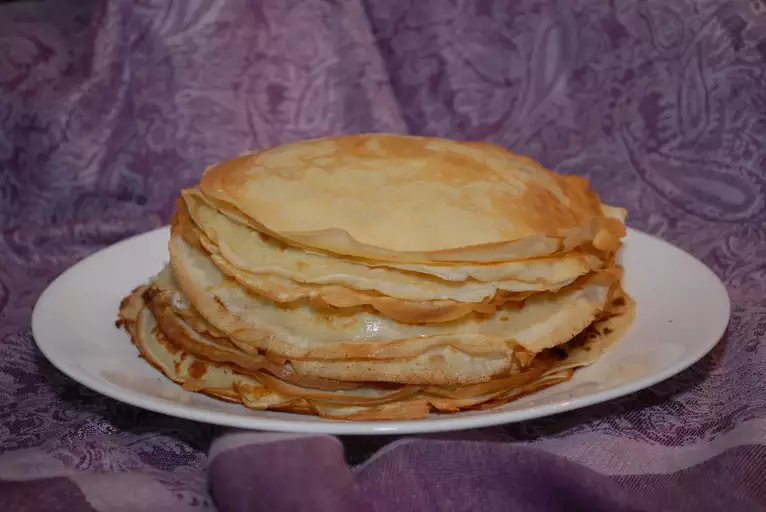

Blini

This blinchiki or blini recipe is a popular Russian dish similar to pancakes. They can be eaten plain or filled with all kinds of sweet and savory fillings.
Ingredients
- 5 eggs
- ½ cup white sugar
- 1 pinch salt
- 4 cups milk
- 2 ½ cups flour
- 6 tablespoons vegetable oil
- 1 teaspoon vegetable oil, or as needed, divided
Steps
- Mix eggs, sugar, and salt together in a bowl. Add milk, flour, and oil. Mix until batter is smooth and thin.
- Heat 2 small nonstick skillets over medium heat. Lightly oil the skillets. Pour in enough batter to just cover the bottom of each skillet. Tilt the pans to spread batter evenly.
- Lift the blini carefully when edges start to brown, about 2 minutes. Flip and cook until the other side is browned, about 1 minute more. Stack blini on a plate.